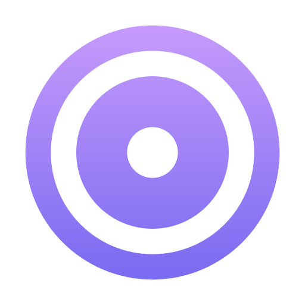

Увлекательный чат
для ваших гостей
С помощью чата можно уловить царящую на мероприятие атмосферу, получить обратную связь от аудитории и раскрепостить гостей!
Заказать ЧатС помощью чата можно уловить царящую на мероприятие атмосферу, получить обратную связь от аудитории и раскрепостить гостей!
Заказать ЧатПриватные вечеринки
Корпоративы
Музыкальные вечера
Свадьбы и Дни рождения
Пабы и кафетерии
Семинары
 Устанавливаете проектор или любой другой экран в зале где будет проходить мероприятие. Выберете место где он будет работать. Мы рекомендуем либо в центре внимания, например сцена, или chill зона, место где люди будут отдыхать проводить время тет-а-тет например бар
Запускаете на подключённом компьютере к экрану браузер и проходите по ссылке, которую вам пришлёт наш специалист
Отправляете своё собственное первое сообщение. Люди заметив экран, сами вовлекутся и начнут отправлять друг другу послания. Для нагнетания ажиотажа, сообщите в микрофон о ПравдаЧате и первое время сами активно посылайте новые сообщения.
Анонимность добавляет совершенно новый уровень волнения и
вовлеченности в ваши мероприятия! С помощью нашей службы обмена
сообщениями гости могут отправлять анонимные сообщения на общий
экран. Это создает смелую атмосферу, в которой гости могут
свободно делиться своими истинными мыслями и Фактор анонимности
снимает любые социальные барьеры и побуждает гостей к более
активному участию в мероприятии. Это не только добавляет элемент
веселья в мероприятие, но и позволяет получить более открытый и
честный отзыв
Гости могут с большей вероятностью поделиться своими мыслями о
мероприятии или высказать свое мнение по определенным темам, если
они чувствуют, что их личность защищена